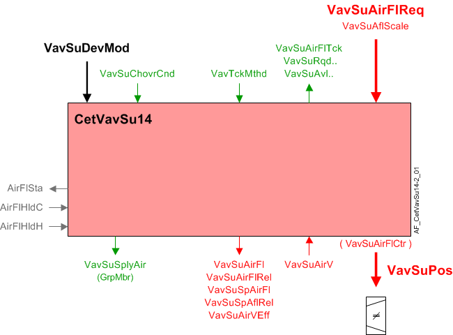
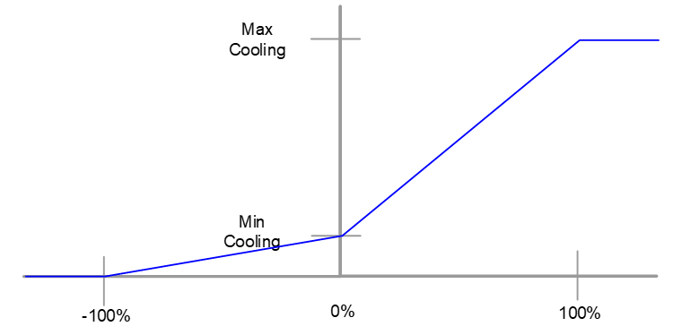
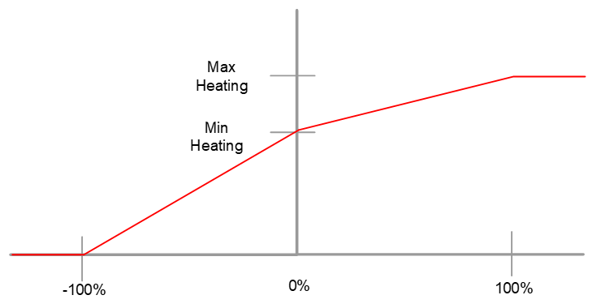
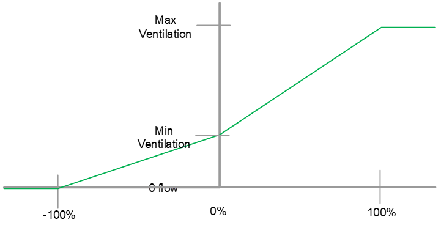
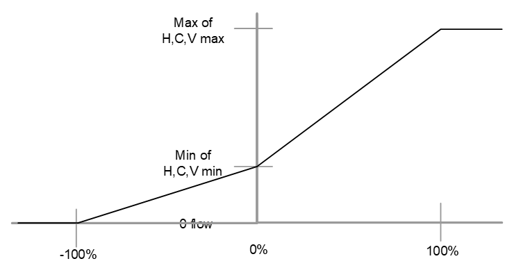
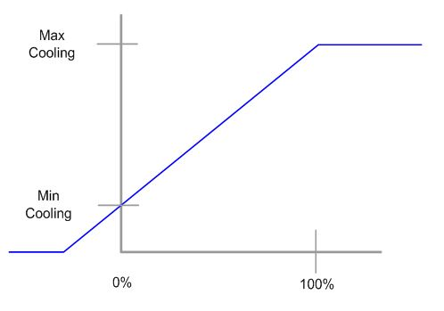
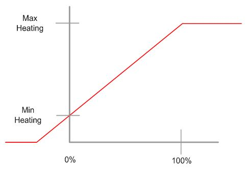
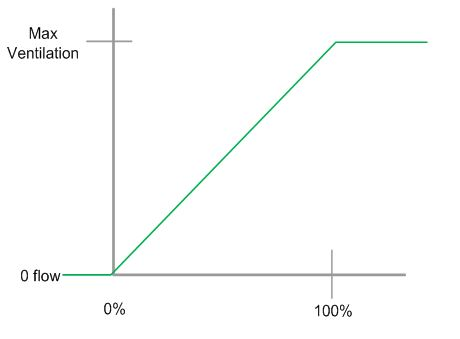
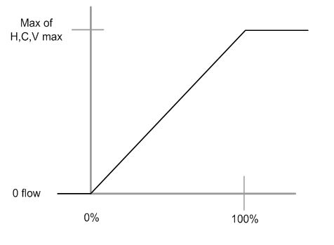

CET supply air VAV box, velocity sensor (CetVavSu14)
Overview
The application function "CET room pressurization supply air VAV box 14, air velocity sensor, internal air flow controller, air damper" (CetVavSu14) operates a damper, using closed loop control to drive the measured flow to an airflow setpoint (VavSuSpAirFl) that it calculates based on demand signals received for heating, cooling and ventilation. It can control airflow with a settling time of 1 to 2 seconds when applied with the right peripheral devices. It can also be set up for slower operation.
The main output is a modulating output for damper position (VavSuPos) that is generated by a PID airflow controller in this AF. Functions to support air balancing are included.
Note
To calculate supply air volume flow, this AF uses a duct areacalculation and input from an air velocity sensor.
Main features:
- VAV supply damper modulation for temperature control and ventilation purposes
- Airflow setpoint calculation
- Airflow calculation
- Air flow coefficient calculation (air balancing logic)
- Interlocks (box coils)
- Supply chain interface
Function
The figure below shows BACnet objects associated with this application function. Primary signal flow is summarized as follows:
Basic function: Accept request signal(s) (VavSuSpAflRel and VavSuAflScale) from associated room controller and map it to appropriate airflow setpoint; Pass result through a device mode logic switch prior to outputting as a command to the air flow setpoint object (VavSuSpAirFl); Compare setpoint to airflow in terminal box.

| Command or request (or related) |
| Notification of condition or status, or availability |
| Device mode |
Interlock (internal signal, not a BACnet object; see Interlocks section for additional information) |


Device mode: The input signal for device mode is a multistate value.
VavSuDevMod supports the following states:
- Off
- Control mode
- Max.air vol.flow
- Min.air vol.flow
- Smoke ctrl.air flow setp.
Available status: When the VAV supply damper is available for heating or cooling or ventilation, the respective binary output signal(s) that indicate availability (VavSuAvlH, VavSuAvlC, VavSuAvlVnt) will be "Yes" (available).
For available status to be "Yes", device mode must equal "Control mode" (modulation) and VavSuChovrCnd (Supply air VAV changeover condition) cannot equal "Neither".
Airflow control loop (cascade control)
This AF has no features related to zeroing or calibrating the air flow sensor.
Airflow controller: The PID airflow controller (VavSuAirFlCtr) compares the airflow volume of the terminal box to the current VAV supply airflow setpoint, and modulates VavSuPos as necessary to keep the box flow at setpoint.
ABT 5.x and later:
Airflow setpoint selection: The AF calculates the airflow setpoint for the terminal to satisfy the demand of one of the supported airflow drivers:
- Heating
- Cooling
- Ventilation
- Make-up
The AF maps the demand level in percent to the flow range (min/max values) configured for the active driver. The result is the airflow setpoint for the terminal in physical flow units (ft3/min, m3/h, l/s). Mapping of the demand level to the flow range is as shown in the diagram.
The objects indicating demand level, (VavSuAirFlReq) and the active driver (VavSuAflScale) are inputs to the AF. They are written by other functions. The airflow limits for the terminal are configured here.
 |  |
Cooling | Heating |
 |  |
Ventilation | Make-up |
That setpoint mapping is normal operation. It applies when the device mode (VavSuDevMod) is Control Mode. Special values of device mode alter the setpoint as follows:
- Off – Setpoint is 0 and damper is closed
- Control Mode – Setpoint follows % demand
- Maximum airflow setpoint – Setpoint is maximum for the currently active airflow scale
- Minimum airflow setpoint – Setpoint is minimum for the currently active airflow scale
- Manual airflow setpoint – Setpoint is value configured for smoke control
Supply Air Flow Limits for Air Terminals - Configuration
The Supply Air Flow serves multiple functions: heating, cooling, ventilation, and pressurization. The following section explains how to configure each supply terminal for different use cases.
Cooling | Heating | Ventilation | |
Single CV (Constant Volume) Supply Terminal | Min = Max = 0 (or minimum flow value needed for the coil to cool the room) | Min = Max = 0 (or minimum flow value needed for the coil to heat the room) | Min = 0 |
Single VAV (Variable Air Volume) Supply Terminal (no fume hood) | Min = 0 (or minimum flow value needed for the coil to cool the room) | Min = 0 (or minimum flow value needed for the coil to heat the room) | Min = 0 |
Single VAV Supply Terminal (fume hood) | Min = 0 (or minimum flow value needed for the coil to cool the room) | Min = 0 (or minimum flow value needed for the coil to heat the room) | Min Ventilation = 0 |
Check the project specification to see if the various terminals are to be sequenced differently from each other: if they respond to different needs. If no difference is specified, follow the next table's instruction. If the flow limits are set the same for each terminal, then they run at equal flows.
Cooling | Heating | Ventilation | |
Multiple Supply Terminals (same size, same function) | Min = 0 (or minimum flow value needed for the coil to cool the room) | Min = 0 (or minimum flow value needed for the coil to heat the room) | Min = 0 |
Check the project specification to see if the various terminals are to be sequenced differently from each other: if they respond to different needs. If the supply terminals are different sizes but have the same function, follow the next table's instruction.
Cooling | Heating | Ventilation | |
Multiple Supply Terminals (different sizes, same function) | Min = 0 (or minimum flow value needed for the coil to cool the room) | Min = 0 (or minimum flow value needed for the coil to heat the room) | Min = 0 |
In the case of multiple supply terminals with different functions, the following tables provide an example of how to configure one CV (Constant Volume) Terminal serving a chilled beam, and one VAV (Variable Air Volume) Terminal without cooling.
Flow through the CV Terminal does not vary to heat or cool.
Flow is always set by ventilation or support for coil (minimum heat or minimum cooling) unless reducing it is the only way to maintain room pressurization.
Flow through the VAV Terminal may vary for heating, cooling, and ventilation, or to balance fume hood flow.
Cooling | Heating | Ventilation | |
Multiple Supply Terminals (different functions) | Min = Max = 0 (or minimum flow value needed for the coil to cool the room) | Min = Max = 0 (or minimum flow value needed for the coil to heat the room) | Min = Max = 0 (or value needed to support a heating or cooling coil) |
Multiple Supply Terminals (different function) | Min = 0 (or minimum flow value needed for the coil to cool the room) | Min = 0 (or minimum flow value needed for the coil to heat the room) | Min = 0 |
ABT 4.x and earlier
Airflow setpoint selection: The AF calculates the airflow setpoint for the terminal to satisfy the demand of one of the supported airflow drivers:
- Heating
- Cooling
- Ventilation
- Make-up
The AF maps the demand level in percent to the flow range (min/max values) configured for the active driver. The result is the airflow setpoint for the terminal in physical flow units (ft3/min, m3/h, l/s). Mapping of the demand level to the flow range is as shown in the diagram.
 |  |
Cooling | Heating |
 |  |
Ventilation | Make-up |
The objects indicating demand level, (VavSuAirFlReq) and the active driver (VavSuAflScale) are inputs to the AF. They are written by other functions. The airflow limits for the terminal are configured here.
That setpoint mapping is normal operation. It applies when the device mode (VavSuDevMod) is Control Mode. Special values of device mode alter the setpoint as follows:
- Off – Setpoint is 0 and damper is closed
- Control Mode – Setpoint follows % demand
- Maximum airflow setpoint – Setpoint is maximum for the currently active airflow scale
- Minimum airflow setpoint – Setpoint is minimum for the currently active airflow scale
- Manual airflow setpoint – Setpoint is value configured for smoke control
Feedback loop: A feedback controller drives the AO object for the damper. The feedback loop uses relative values for flow and setpoint. Both physical values are converted to a percentage of a scaling value for use in the PID loop. These relative values for flow and setpoint are written to calculated value objects. (This is different from the scaling used to express the demand for heating, cooling or ventilation.) The scaling value used is the highest flow setpoint expected in the programmed control sequence. It is the largest of the various maximum flow limits configured for the terminal:
- cooling maximum flow
- heating maximum flow
- ventilation maximum flow
- nominal flow
Flow sensor failure: If the airflow sensor object is invalid (not including over range) then, the flow control damper position will be set based on the setting of the configuration extension AirFlFailMod.
- If AirFlFailMod is set to Hold, the damper will stay in the current position.
- If AirFlFailMod is set to Open, the damper position will be set to 100%.
- If AirFlFailMod is set to Close, the damper position will be set to 0%.
While the sensor is failed, PID operation is suspended. When status of the sensor is valid again, the PID resumes operation.
When the AI is unreliable, airflow calculations continue, however, airflow value might not change because the value of the AI stops updating. The AF also sets a binary value object indicating normal or faulty state of the airflow data.
Network communication loss: If network communication loss occurs, the flow setpoint will be set based on the setting of the configuration extension AirFlFailMod.
- If AirFlFailMod is set to Hold, the flow setpoint will stay in the current position.
- If AirFlFailMod is set to Open, the flow setpoint will be set to the maximum flow of the mode the terminal was in during failure.
- If AirFlFailMod is set to Close, the flow setpoint will be set to the minimum flow of the mode the terminal was in during failure.
When the network communication is lost, the flow control loop continues to operate with the setpoint selected from above.
Sensor calibration: No sensor calibration is implemented in this AF.
Airflow sensing: The AF calculates volumetric airflow from a measured velocity value.
Low sensor value: This feature is not required with a velocity sensor. The sensor is not as sensitive at low flows.
Failed airflow sensor: The control program monitors the reliability property of the AI Object representing the velocity sensor. Status of the AI object drives an “air flow valid” variable used elsewhere in the AF.
Duct area calculation: The duct area is calculated based on configuration data.
Airflow coefficient: The airflow coefficient is configuration data (VavSuFlCoef). Users may enter the coefficient directly or enter their own, independent airflow readings and have the AF calculate and set the flow coefficient.
Air balancing: Balancing functions are not connected with the air pressurization functions.The air balancing functions are:
- Set flow setpoint according to selected balancing mode.
- Calculate duct area
- Calculate flow coefficient.
- Apply airflow coefficient.
- Restore automatic operation.
- Record data for balancing report.
Balancing functions are not connected with room pressurization functions. It is expected that the room may lose pressurization when the balancer performs balancing steps.
Interlocks
Room automation interlocks are internal signals that coordinate interaction between HVAC devices. They are not visible in ABT Site or web interface, but parameters associated with them are. See comment column for hints on parameters that affect interlock functionality.
Signal | Type | Dir. | Description | Comment |
|---|---|---|---|---|
AirFlCReq | Boolean | In | Airflow cooling request |
|
AirFlHReq | Boolean | In | Airflow heating request |
|
AirFlHldH | Boolean | In | Airflow hold for heating |
|
AirFlHldC | Boolean | In | Airflow hold for cooling |
|
AirFlSta | Boolean | Out | Airflow status | See Configuration section for parameters named "...AirFlSta" |
Supply chain interface: There are four demand output signals for air.
- VavSuCDmd - Supply air VAV cooling demand
When device mode is in control, VavSuCDmd is the percentage value of the cooling request from the room (otherwise it is 0). - VavSuHDmd - Supply air VAV heating demand
When device mode is in control, VavSuHDmd is the percentage value of the heating request from the room (otherwise it is 0). - VavSuVntDmd - Supply air VAV ventilation demand
When device mode is in control, VavSuVntDmd is the percentage value of the ventilation request from the room (otherwise it is 0). - VavSuAirDmd - Supply air VAV air demand for plant mode
VavSuAirDmd is a multistate value that equals PltOpMod (VavSuSpAirFl must be greater than the switch-on point for airflow demand, SwiOnAirFlDmd). If PltOpMod is "Emergency Off" or "Smoke Negative Pres.", VavSuAirDmd will equal PltOpMod regardless of VavSuSpAirFl value.
Airflow deviation signal: The supply airflow deviation (VavSuAirFlDvn) signal (in percent) is used for fan speed (static pressure) reset strategies at the air handling unit. It is obtained by measuring the airflow from the supply duct and comparing it to the airflow setpoint.
VavSuAirFlDvn = VavSuSpAflRel minus VavSuAirFlRel
VavSuAirFlDvn will equal 0 in case of invalid condition(s).
Saturation signal: The saturation signal VavSuAflStrtn is a binary object that is True ("Starved") when the airflow control loop cannot get enough air to reach setpoint for a time exceeding a built-in time delay.
Note
VavSuAflStrtn is always off if parameter EnStrtnCal = 0 (No). This allows the user to exclude a particular terminal from the saturation pressure reset system.
In order for Saturation Signal to be True:
1. The Enable Saturation Calibration parameter must be set to Yes (EnStrtnCal=Yes)
2. The output of the VAV controller must be greater than the saturation level (VavEhAirFlCtr>StrtnLvl)
3. The air flow error, which is the setpoint minus airflow value, must be greater than the air flow error limit (AirFlEr>AirFlErLm)
Saturation Signal can only be True when all three parts are satisfied for the duration of DlyOnStrtn.
AHU changeover condition signal: The multistate VAV supply changeover condition input signal (VavSuChovrCnd) comes from the room coordinating function (RCoo). It indicates the current heating / cooling available status for central AHU. If the supply air system does not include a changeover function, do not connect this value to a source of data. Configure the value to the normal AHU operation state. The default is Cooling.
Four states are supported:
- Neither
- Heating
- Cooling
- Neutral
"Neutral" means that heating and cooling PID controllers are both enabled and that the system is providing air that is not hot or cold.
Configuration
 Objects
Objects
Description | Object | Type | Default value |
|---|---|---|---|
Supply air VAV balancing state 1:Initial | VavSuBalSta | MCnfVal | 1:Initial |
Supply air VAV balancing mode 1:Maximum cooling | VavSuBalMod | MCnfVal | 1:Maximum cooling |
Supply air VAV air volume flow at hood | VavSuAirFlHood | ACnfVal | 100 [m3/h] |
Supply air VAV recorded balancing mode Enumeration see VavSuBalMod | VavSuBalModRec | MCnfVal | 1:Maximum cooling |
Supply air VAV recorded air volume flow at hood | VavSuAflHodRec | ACnfVal | 0 [m3/h] |
Supply air VAV recorded flow coefficient | VavSuFlCoefRec | ACnfVal | 0.000 |
Supply air VAV initial flow coefficient | VavSuFlCoefIni | ACnfVal | 0.000 |
Supply air VAV recorded air volume flow | VavSuAirFlRec | ACnfVal | 0 [m3/h] |
Supply air VAV recorded position | VavSuPosRec | ACnfVal | 0 [%] |
Supply air VAV duct area | VavSuDuctArea | ACnfVal | 0.05 [m2] |
Supply air VAV duct shape 1:Rectangular | VavSuDuctShape | MCnfVal | 2:Round |
Supply air VAV dimension A | VavSuDmsnA | ACnfVal | 20 [cm] |
Supply air VAV dimension B | VavSuDmsnB | ACnfVal | 20 [cm] |
Supply air VAV flow coefficient | VavSuFlCoef | ACnfVal | 0.780 |
Supply air VAV smoke control air volume flow setpoint | VavSuSpAflSmk | ACnfVal | 50 [m3/h] |
Supply air VAV maximum air volume flow for cooling | VavSuAirFlMaxC | ACnfVal | 100 [m3/h] |
Supply air VAV minimum air volume flow for cooling | VavSuAirFlMinC | ACnfVal | 50 [m3/h] |
Supply air VAV maximum air volume flow for heating | VavSuAirFlMaxH | ACnfVal | 100 [m3/h] |
Supply air VAV minimum air volume flow for heating | VavSuAirFlMinH | ACnfVal | 50 [m3/h] |
Supply air VAV maximum air volume flow for ventilation | VavSuAflMaxVnt | ACnfVal | 100 [m3/h] |
Supply air VAV minimum air volume flow for ventilation | VavSuAflMinVnt | ACnfVal | 0 [m3/h] |
 Parameters
Parameters
Description | Parameter | Default value |
|---|---|---|
Failure mode for air volume flow sensor ▶Also defines how the terminal responds if loss of network communication occurs. | AirFlFailMod | 1:Hold supply air |
Time constant for air volume flow | TiConAirFl | 0 [s] |
Switch delay for tracking method to air volume flow | SwiDlyTckMthd | 60 [s] |
Switch tolerance for tracking method to air volume flow | SwiTolTckMthd | 5.0 [%] |
Nominal air volume flow | AirFlNom | 0 [m3/h] |
Enable deviation calculation 0:No 1:Yes | EnDvnCal | 1:Yes |
Enable saturation calculation 0:No | EnStrtnCal | 1:Yes |
Saturation level | StrtnLvl | 90 [%] |
Air volume flow error limit | AirFlErLm | 0 [%] |
Air volume flow error limit | DlyOnStrtn | 60 [s] |
Switch-on point for air flow demand | SwiOnAirFlDmd | 4 [%] |
Hysteresis for air flow demand | HysAirFlDmd | 2 [%] |
Switch-on point for air volume flow state | SwiOnAirFlSta | 10 [%] |
Hysteresis for air volume flow state | HysAirFlSta | 5 [%] |
Air volume flow unit | AirFlUnit | [m3/h] |
Interface
Interface | Description | Type | Ref. | Owned by | |
|---|---|---|---|---|---|
VavSuPos | Supply air VAV position | AO | ◉ | Room segment / Field device | |
VavSuAirV | Supply air VAV air velocity | AI | ◉ | Room segment / Field device | |
VavSuAirVEff | Supply air VAV effective air velocity | ACalcVal | ● | - | |
VavSuSpAirFl | Supply air VAV setpoint for air volume flow | APrcVal | ● | - | |
TrndVavSuSpAfl | Trend for supply air VAV setpoint for air volume flow | FtrSel | ● | - | |
VavSuSpAflRel | Supply air VAV setpoint for relative air volume flow | ACalcVal | ● | - | |
VavSuAirFl | Supply air VAV air volume flow | ACalcVal | ● | - | |
TrndVavSuAirFl | Trend for supply air VAV air volume flow | FtrSel | ● | - | |
VavSuAirFlRel | Supply air VAV relative air volume flow | ACalcVal | ● | - | |
VavSuAirFlDvn | Supply air VAV air volume flow deviation | ACalcVal | ● | - | |
VavSuAflStrtn | Supply air VAV air volume flow saturation 0:Satisfied | BCalcVal | ● | - | |
VavSuDevMod | Supply air VAV device mode 1:Off | MPrcVal | ● | - | |
VavSuAirFlCtr | Supply air VAV air flow controller | Controller | ● | - | |
VavSuAirFlReq | Supply air VAV air volume flow request | ACalcVal | ● | - | |
VavSuAflScale | Supply air VAV air volume flow scale 1:Heating | MCalcVal | ● | - | |
VavSuRqdC | Supply air VAV required for cooling 0:Off | BCalcVal | ● | - | |
VavSuRqdH | Supply air VAV required for heating 0:Off | BCalcVal | ● | - | |
VavSuAvlC | Supply air VAV available for cooling 0:No | BCalcVal | ● | - | |
VavSuAvlH | Supply air VAV available for heating 0:No | BCalcVal | ● | - | |
VavSuAvlVnt | Supply air VAV available for ventilation 0:No | BCalcVal | ● | - | |
VavSuChovrCnd | Supply air VAV changeover condition 1:Neither | MPrcVal | ● | - | |
VavSuAirDmd | Supply air VAV air demand for plant mode 1:Off | MCalcVal | ● | - | |
VavSuCDmd | Supply air VAV cooling demand | ACalcVal | ● | - | |
VavSuHDmd | Supply air VAV heating demand | ACalcVal | ● | - | |
VavSuVntDmd | Supply air VAV ventilation demand | ACalcVal | ● | - | |
VavSuAirFlTck | Supply air VAV air volume flow tracking | ACalcVal | ● | - | |
VavTckMthd | VAV tracking method 1:Setpoint | MCalcVal | ● | - | |
VavSuFlCoefCal | Supply air VAV calculated flow coefficient | ACalcVal | ● | - | |
VavSuBalCmd | Supply air VAV balancing command 1:Ready | MTrgVal | ● | - | |
CdnMsgCol | Collection of condensation message | ColView | ● | - | |
| CdnMsgRs | Result of condensation message 0:Normal | BCalcVal | ● | - |
CdnMsg | Condensation message Enumeration see CdnMsgRs | BCalcVal | ◉ | CcgChw11 / HCcg2Pipe11 / HCcg4Pipe11 / HCcg4Pipe13 | |
CclCdnMsg | Cooling coil condensation message Enumeration see CdnMsgRs | BCalcVal | ◉ | CclChw13 | |
VavSuSplyAir | Supply air VAV supply chain for air | GrpMbr | ● | - | |
VavSuBalSta | Supply air VAV balancing state 1:Initial | MCnfVal | ● | - | |
VavSuBalMod | Supply air VAV balancing mode 1:Maximum cooling | MCnfVal | ● | - | |
VavSuAirFlHood | Supply air VAV air volume flow at hood | ACnfVal | ● | - | |
VavSuBalModRec | Supply air VAV recorded balancing mode 1:Maximum cooling | MCnfVal | ● | - | |
VavSuAflHodRec | Supply air VAV recorded air volume flow at hood | ACnfVal | ● | - | |
VavSuFlCoefRec | Supply air VAV recorded flow coefficient | ACnfVal | ● | - | |
VavSuFlCoefIni | Supply air VAV initial flow coefficient | ACnfVal | ● | - | |
VavSuAirFlRec | Supply air VAV recorded air volume flow | ACnfVal | ● | - | |
VavSuPosRec | Supply air VAV recorded position | ACnfVal | ● | - | |
VavSuDuctArea | Supply air VAV duct area | ACnfVal | ● | - | |
VavSuDuctShape | Supply air VAV duct shape 1:Rectangular | MCnfVal | ● | - | |
VavSuDmsnA | Supply air VAV dimension A | ACnfVal | ● | - | |
VavSuDmsnB | Supply air VAV dimension B | ACnfVal | ● | - | |
VavSuFlCoef | Supply air VAV flow coefficient | ACnfVal | ● | - | |
VavSuSpAflSmk | Supply air VAV smoke control air volume flow setpoint | ACnfVal | ● | - | |
VavSuAirFlMaxC | Supply air VAV maximum air volume flow for cooling | ACnfVal | ● | - | |
VavSuAirFlMinC | Supply air VAV minimum air volume flow for cooling | ACnfVal | ● | - | |
VavSuAirFlMaxH | Supply air VAV maximum air volume flow for heating | ACnfVal | ● | - | |
VavSuAirFlMinH | Supply air VAV minimum air volume flow for heating | ACnfVal | ● | - | |
VavSuAflMaxVnt | Supply air VAV maximum air volume flow for ventilation | ACnfVal | ● | - | |
VavSuAflMinVnt | Supply air VAV minimum air volume flow for ventilation | ACnfVal | ● | - | |
Engineering and commissioning
Check for correct damper actuator installation. Actuator mis-wiring or improper installation is a major cause of common problems.
The relative air flow (VavSuAirFlRel) is normalized as a percentage (0 - 100%) of VavSuAirFl based on the nominal (rated) value for the box air flow (AirFlNom).